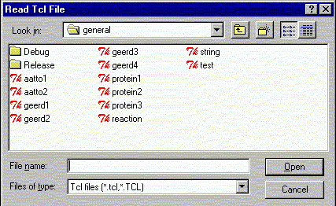

**************************************************************************
Import tcl file widget
Leif Laaksonen CSC 1997
**************************************************************************
Import a tcl script and execute it. It is the same as writing source file_name.tcl on the line command.

Line command: see import command
**************************************************************************
LUL/1997
**************************************************************************